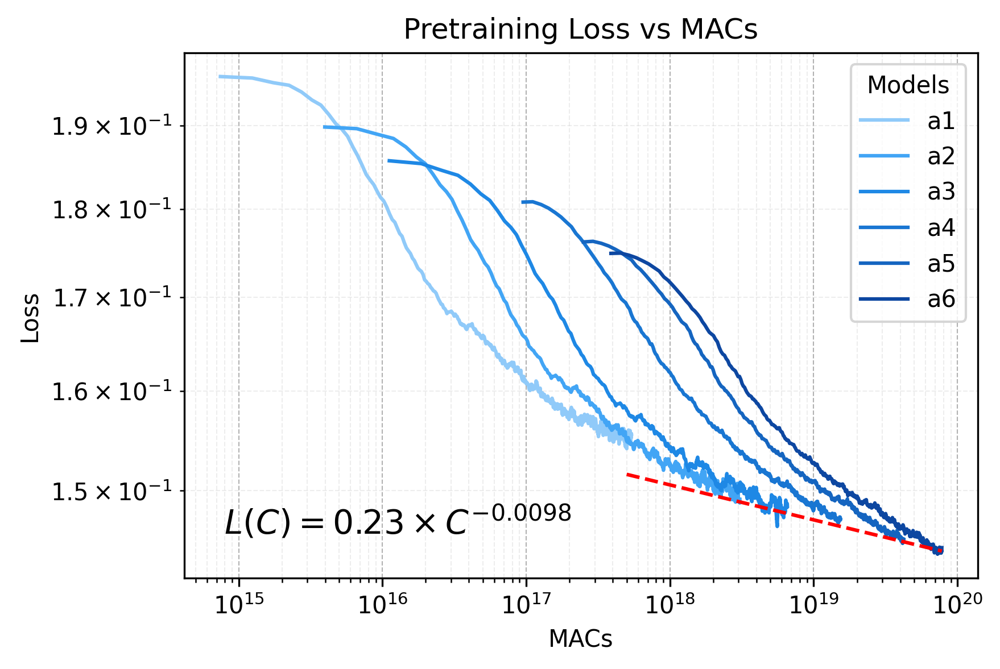
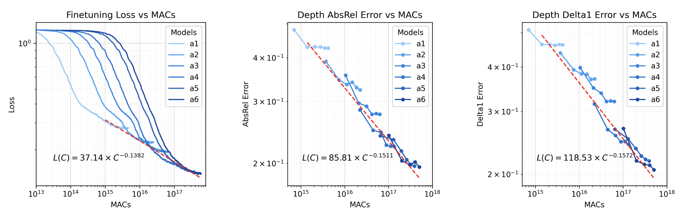
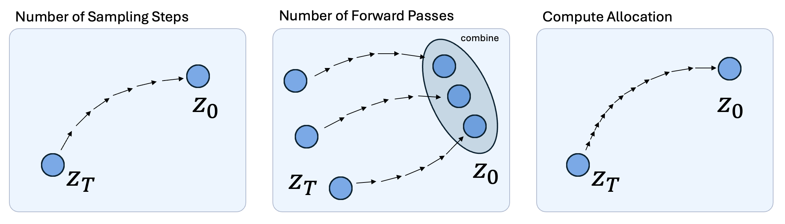
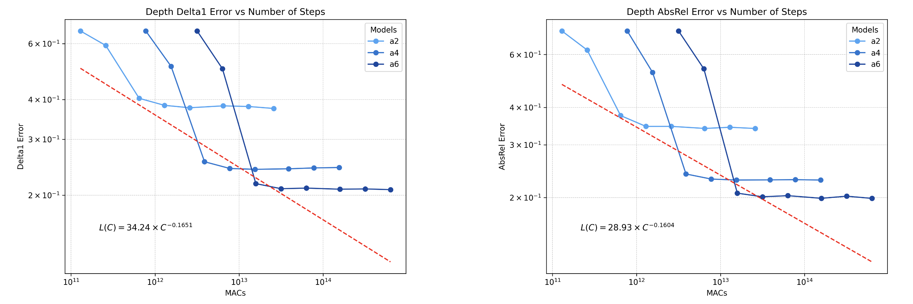
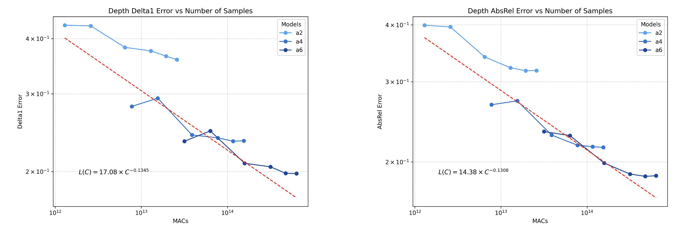
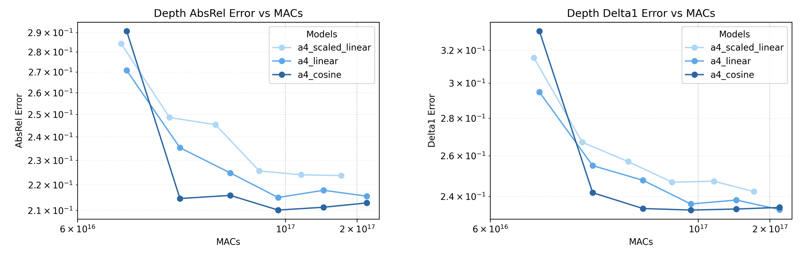

Scaling Properties of Diffusion Models For Perceptual Tasks
University of California, Berkeley
In this paper, we argue that iterative computation with diffusion models offers a powerful paradigm for not only generation but also visual perception tasks. We unify tasks such as depth estimation, optical flow, and amodal segmentation under the framework of image-to-image translation, and show how diffusion models benefit from scaling training and test-time compute for these perceptual tasks. Through a careful analysis of these scaling properties, we formulate compute-optimal training and inference recipes to scale diffusion models for visual perception tasks. Our models achieve competitive performance to state-of-the-art methods using significantly less data and compute.
Scaling Diffusion Models For Perceptual Tasks
We display the effectiveness of leveraging iterative feedback computation through diffusion models for visual perception tasks. We perform an in-depth study of train/test-time compute scaling laws across all layers
of the stack, including pre-training, fine-tuning, and diffusion inference. Specifically, we perform our study on the monocular depth estimation task. We show how to transfer the scaling laws derived for depth estimation to boost performance
on tasks such as optical flow or amodal segmentation for both training and inference. Finally, we apply all of our scaling strategies to efficiently train a generalist mixture-of-experts model on perception tasks, achieving state-of-the-art results across various benchmarks.

Figure 1: A Unified Framework: We fine-tune pre-trained Diffusion Models (DM) for visual
perception tasks. The input is a RGB image, a conditional image (i.e. next video frame, occlusion
mask, etc.), and a noised image of the ground truth prediction. Our model then generates predictions for various visual tasks such as monocular depth estimation, optical flow prediction, and
amodal segmentation, based on the conditional task embedding. We train a generalist model that can perform all three tasks with exceptional performance.
Scaling Training Compute
We derive scaling laws for generative pre-training and fine-tuning of diffusion models for perceptual tasks. We pre-train DiT models of varied sizes on the ImageNet-1K dataset for class-conditional image generation. We observe clear power law scaling behavior as we increase the model size by increasing the hidden dimension and number of layers linearly.

Figure 2: Scaling law for generative pre-training of DiT on ImageNet-1K dataset.
In addition to pre-training, we also derive scaling laws for fine-tuning on the downstream task of monocular depth estimation. We fine-tune the pre-trained DiT models by posing the depth estimation task as an image-to-image translation. We fine-tune our models for conditional denoising diffusion generation, training on the Hypersim dataset. We show that larger
dense DiT models predictably converge to a lower fine-tuning loss. We also observe a strong correlation between the fine-tuning loss scaling law and validation metric scaling laws.

Figure 3: Scaling laws for fine-tuning of DiT for monocular depth estimation with the Hypersim dataset.
Finally, we also explore the effect of scaling pre-training compute, image resolution, and mixture-of-experts upcyling during fine-tuning. These results can be found in our paper.
Scaling Test-Time Compute
Scaling test-time compute has been explored for autoregressive LLMs to improve performance on long-horizon reasoning tasks.
Diffusion models by design allow efficient scaling of test-time compute. First, we can simply increase the number of denoising
steps to increase the compute spent at inference. Since we are estimating deterministic outputs, we can then initialize multiple
noise latents and ensemble the predictions to get a better estimation. Finally, we can also reallocate test-time compute for low
and high frequency denoising by modifying the noise variance schedule.

Figure 4: Techniques to scale diffusion test-time compute for perceptual tasks.
The most natural way of scaling diffusion inference is by increasing denoising steps. Since the model
is trained to denoise the input at various timesteps, we can scale the number of diffusion denoising
steps at test-time to produce finer, more accurate predictions. This coarse-to-fine denoising paradigm
is also reflected in the generative case, and we can take advantage of it for the discriminative case
by increasing the number of denoising steps. We show a clear power law scaling behavior in depth estimation
validation metrics by simply increasing the number of diffusion sampling steps at test-time.

Figure 5: Scaling law for increasing denoising steps on model fine-tuned for depth estimation.
We can also exploit the fact that denoising different noise latents will generate different downstream predictions. We do so through a test-time ensembling approach in which we compute \( N \) forward passes per input sample and reduce the samples through an iterative optimization procedure. Since it
requires no ground truth, we scale ensembling by increasing \( N \) to utilize more test-time compute. We apply test-time ensembling with \( N ∈ [1, 2, 5, 10, 15, 20] \). We show that ensembling multiple predictions from distinct noise initializations displays power law scaling behavior for depth estimaton.

Figure 6: Scaling law for test-time ensembling on model fine-tuned for depth estimation.
Finally, we can scale test-time compute by increasing compute usage at different points of the denoising
process. In diffusion noise schedulers, we can define a schedule for the variance of the Gaussian
noise applied to the image over the total diffusion timesteps \( T \). Tuning the noise variance schedule
allows for reorganizing compute by allocating more compute to denoising steps earlier or later in
the noise schedule. We experiment with three different noise level settings for DDIM: linear, scaled
linear, and cosine. Cosine scheduling inearly declines from the middle of the corruption process, ensuring
the image is not corrupted too quickly as in linear schedules. Figure 7 shows that the cosine noise variance
schedule outperforms linear schedules for DDIM on the depth estimation task under a fixed compute budget.

Figure 7: Reallocating test-time compute with noise variance schedule on models fine-tuned for depth estimation.
Putting It All Together
We train a unified generalist model capable of performing depth estimation, optical flow estimation, and amodal segementation tasks. We apply all of our training and inference scaling techniques, highlighting the generalizability of our approach.

Figure 8: Generations for depth estimation, optical flow estimation, and amodal segmentation from our generalist model.
To train our generalist model, we modify the DiT-XL architecture by replacing the patch embedding layer with a separate \( \verb|PatchEmbedRouter| \) module, which
routes each VAE embedding to a specific input convolutional layer based perception task. This
ensures the DiT-XL model is able to distinguish between the task-specific embeddings during fine-
tuning. After the initial fine-tuning of the dense model, we upcycle it to a DiT-XL-8E2A model and continue fine-tuning the new mixture-of-experts model.
Our results prove the effectiveness of our training and test-time scaling strategies, removing the need to use pre-trained models trained on internet-scale datasets to enable high-quality visual perception in diffusion models. We hope to inspire future work in scaling training
and test-time compute for iterative generative paradigms.
BibTeX
@article{ScalingDiffusionPerception2024,
title={Scaling Properties of Diffusion Models for Perceptual Tasks},
author={Rahul Ravishankar and Zeeshan Patel and Jathushan Rajasegaran and Jitendra Malik},
year={2024},
journal={arXiv:2411.08034}
url={https://arxiv.org/abs/2411.08034}
}